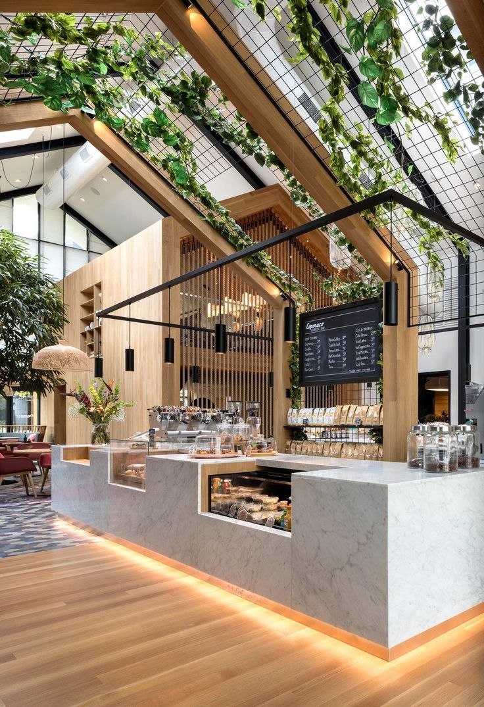
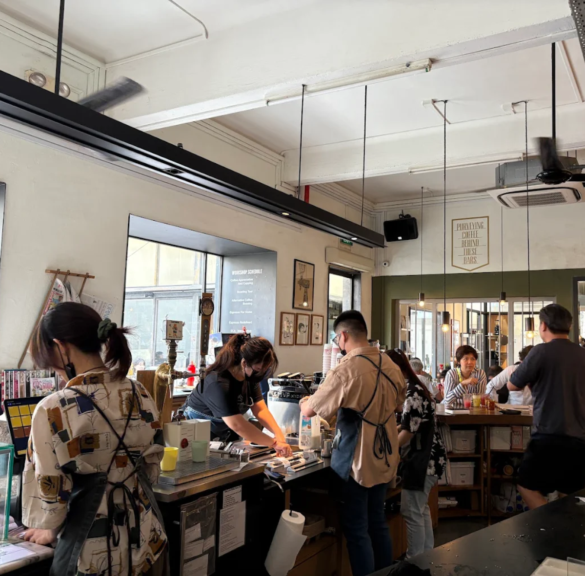
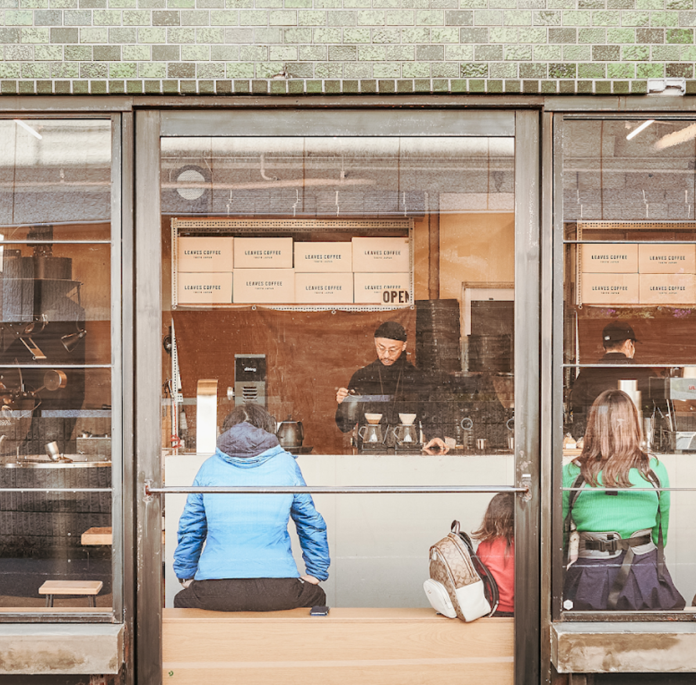
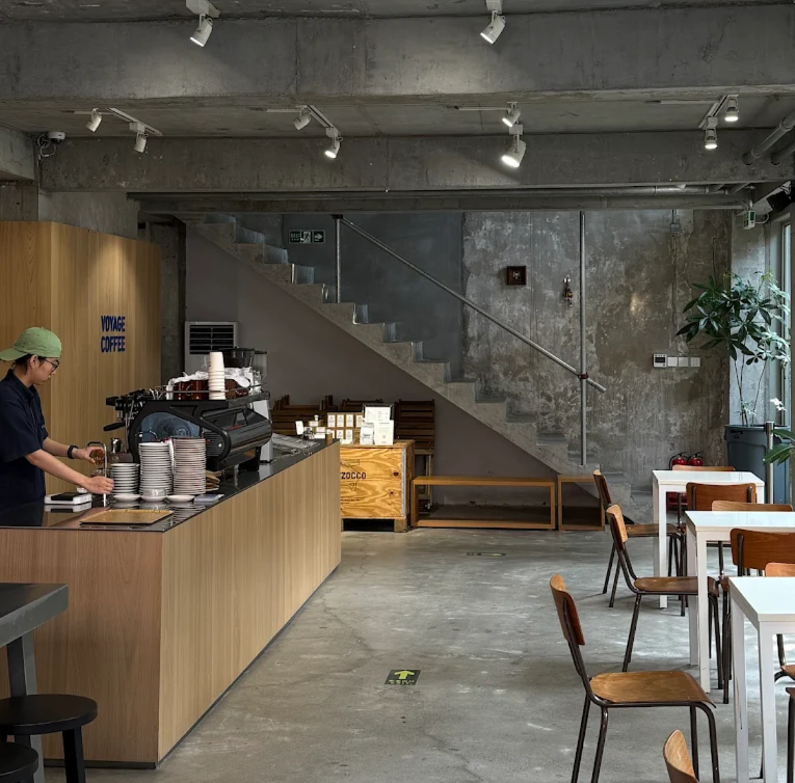
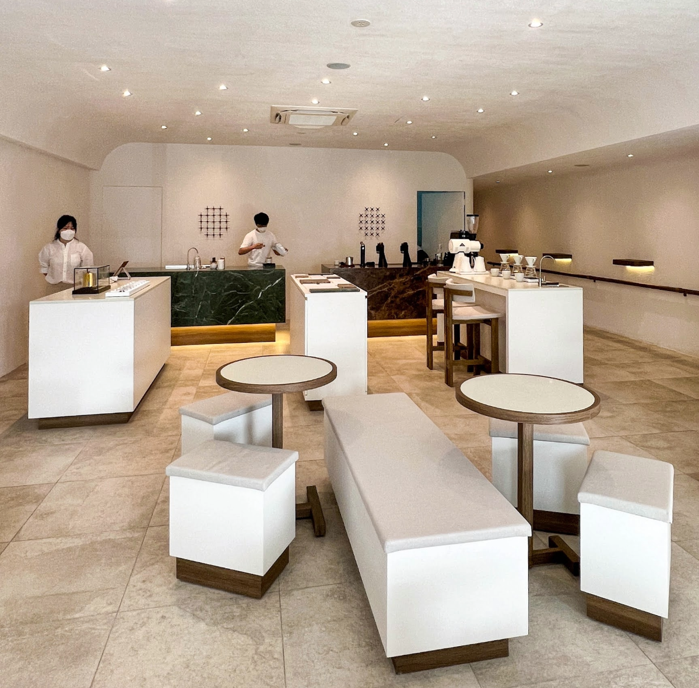
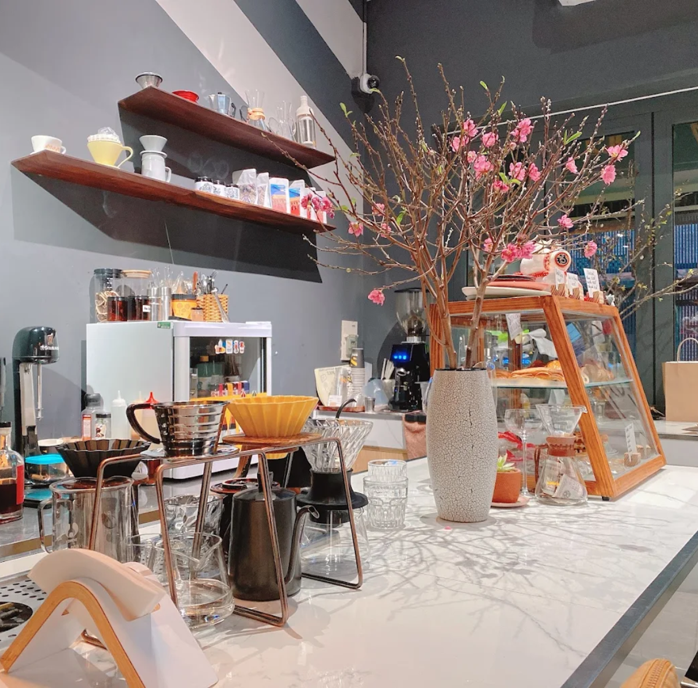
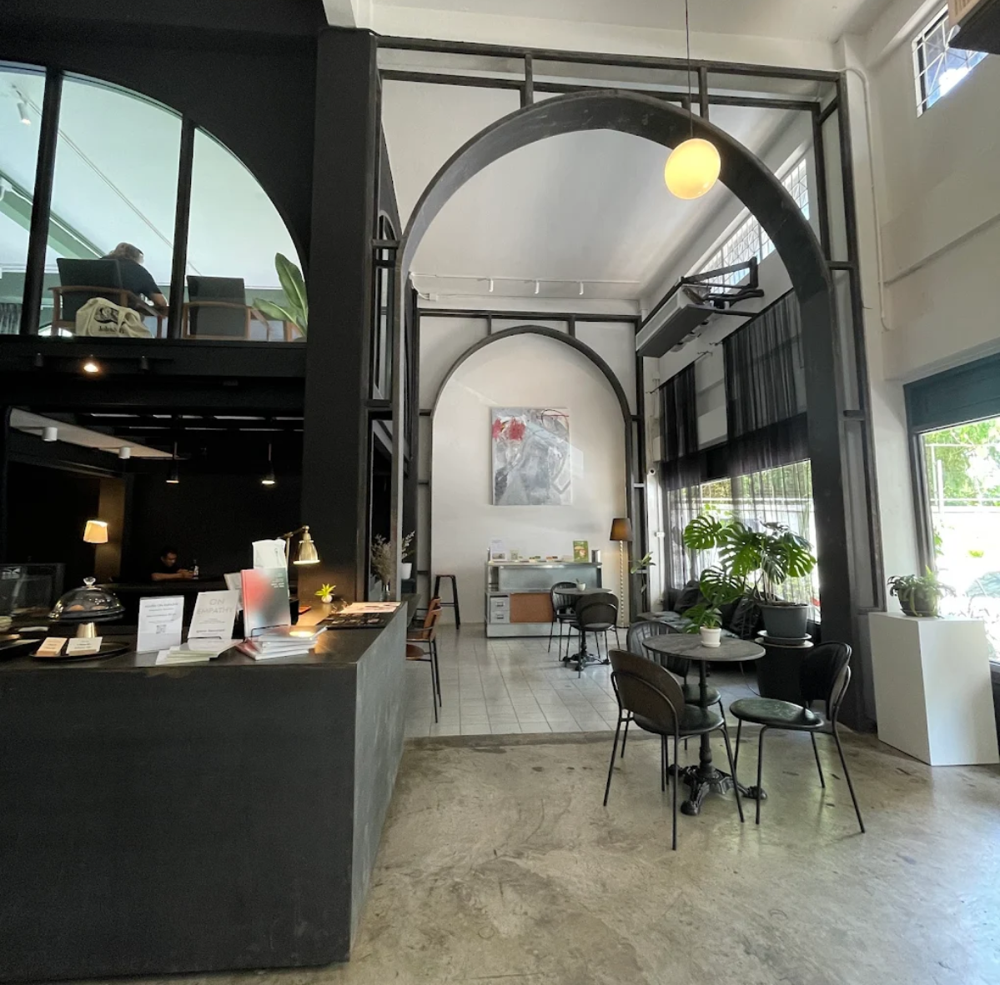

FIND US
Cafe Location

Philippines
Address
Universal LMS Building, 106 Esteban, Makati City, Metro Manila
Operation Hours
07:00am - 08:00pm

South Korea
Address
28 Dongseong-ro 39beon-gil, Busanjin District, Busan, South Korea
Operation Hours
08:00am - 10:00pm

Singapore
Address
100 Orchard Rd, #01-23, Singapore 182000
Operation Hours
08:00am - 09:00pm

Japan
Address
1 Chome-8-8 Honjo, Sumida City, Tokyo 130-0004, Japan
Operation Hours
10:00am - 05:00pm

China
Address
China, Beijing, Chaoyang, 酒仙桥路4号北京798艺术区内 邮政编码: 100102
Operation Hours
07:30am - 10:30pm

Malaysia
Address
Jalan PJU 5/20, 47810, Petaling Jaya, Selangor, Malaysia
Operation Hours
08:00am - 09:00pm

Vietnam
Address
34A Tran Hung Dao, Hoan Kiem, Ha Noi, Vietnam
Operation Hours
08:00am - 10:00pm

Thailand
Address
521 Charoen Nakhon 5/1 Alley, Khlong Ton Sai, Khlong San, Bangkok 10600, Thailand
Operation Hours
08:00am - 05:00pm